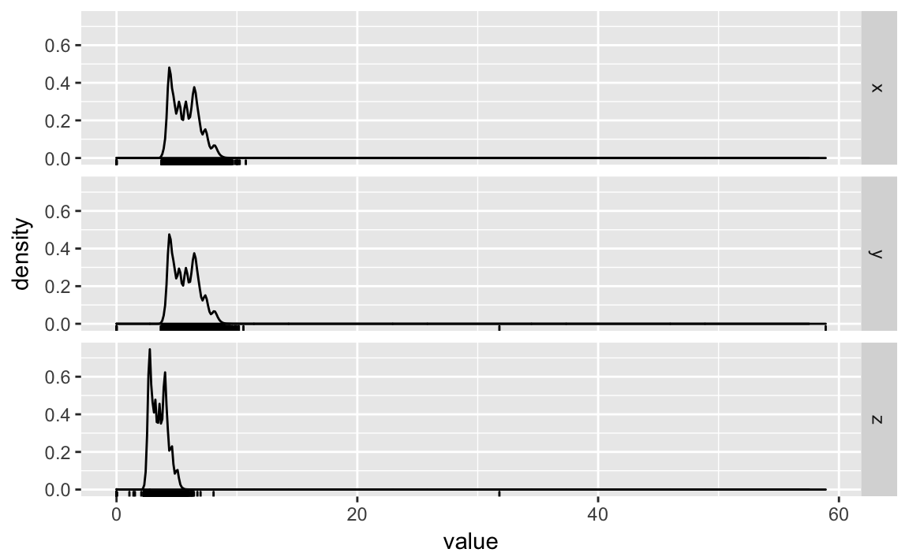
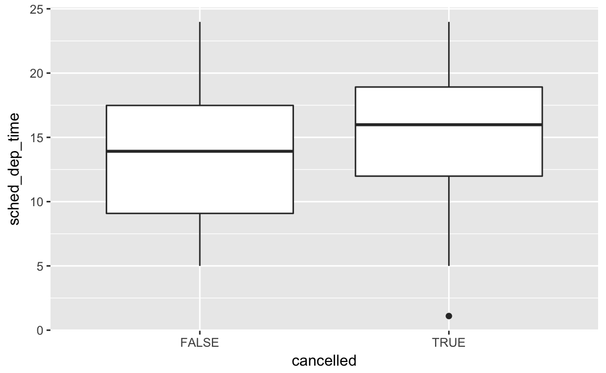

4 Exploratory Data Analysis
4.1 Introduction
library("tidyverse")4.1.1 Questions
4.1.2 Variation
4.1.2.1 Exercises
1. Explore the distribution of each of the x, y, and z variables in diamonds. What do you learn? Think about a diamond and how you might decide which dimension is the length, width, and depth.
In order to make it eaiser to plot them, I’ll reshape the dataset so that I can use the variables as facets.
diamonds %>%
mutate(id = row_number()) %>%
select(x, y, z, id) %>%
gather(variable, value, -id) %>%
ggplot(aes(x = value)) +
geom_density() +
geom_rug() +
facet_grid(variable ~ .)
There several noticeable features of thedistributions
- They are right skewed, with most diamonds small, but a few very large ones.
- There is an outlier in
y, andz(see the rug) - All three distributions have a bimodality (perhaps due to some sort of threshhold)
According to the documentation for diamonds: x is length, y is width, and z is depth. I don’t know if I would have figured that out before; maybe if there was data on the type of cuts.
2. Explore the distribution of price. Do you discover anything unusual or surprising? (Hint: Carefully think about the binwidth and make sure you try a wide range of values.)
- The price data is spikey, but I can’t tell what that corresponds to, as the following plots don’t show much difference in the distributions in the last one and last two digits.
- There are no diamonds with a price of 1500
- There’s a bulge in the distribution around 7500.
ggplot(filter(diamonds, price < 2500), aes(x = price)) +
geom_histogram(binwidth = 10, center = 0)
ggplot(filter(diamonds), aes(x = price)) +
geom_histogram(binwidth = 100, center = 0)
Distribution of last digit
diamonds %>%
mutate(ending = price %% 10) %>%
ggplot(aes(x = ending)) +
geom_histogram(binwidth = 1, center = 0) +
geom_bar()
diamonds %>%
mutate(ending = price %% 100) %>%
ggplot(aes(x = ending)) +
geom_histogram(binwidth = 1) +
geom_bar()
diamonds %>%
mutate(ending = price %% 1000) %>%
filter(ending >= 500, ending <= 800) %>%
ggplot(aes(x = ending)) +
geom_histogram(binwidth = 1) +
geom_bar()
3. How many diamonds are 0.99 carat? How many are 1 carat? What do you think is the cause of the difference?
There are more than 70 times as many 1 carat diamonds as 0.99 carat diamond.
diamonds %>%
filter(carat >= 0.99, carat <= 1) %>%
count(carat)
#> # A tibble: 2 × 2
#> carat n
#> <dbl> <int>
#> 1 0.99 23
#> 2 1.00 1558I don’t know exactly the process behind how carats are measured, but some way or another some diamonds carat values are being “rounded up”, because presumably there is a premium for a 1 carat diamond vs. a 0.99 carat diamond beyond the expected increase in price due to a 0.01 carat increase.
To check this intuition, we’d want to look at the number of diamonds in each carat range to seem if there is an abnormally low number at 0.99 carats, and an abnormally high number at 1 carat.
diamonds %>%
filter(carat >= 0.9, carat <= 1.1) %>%
count(carat) %>%
print(n = 30)
#> # A tibble: 21 × 2
#> carat n
#> <dbl> <int>
#> 1 0.90 1485
#> 2 0.91 570
#> 3 0.92 226
#> 4 0.93 142
#> 5 0.94 59
#> 6 0.95 65
#> 7 0.96 103
#> 8 0.97 59
#> 9 0.98 31
#> 10 0.99 23
#> 11 1.00 1558
#> 12 1.01 2242
#> 13 1.02 883
#> 14 1.03 523
#> 15 1.04 475
#> 16 1.05 361
#> 17 1.06 373
#> 18 1.07 342
#> 19 1.08 246
#> 20 1.09 287
#> 21 1.10 278Q Can you think of other examples of similar phenoma where you might expect to see similar discontinuities in areas related to your research.
- Compare and contrast
coord_cartesian()vsxlim()orylim()when zooming in on a histogram. What happens if you leavebinwidthunset? What happens if you try and zoom so only half a bar shows?
coord_cartesian simply zooms in on the area specified by the limits. The calculation of the histogram is unaffected.
ggplot(diamonds) +
geom_histogram(mapping = aes(x = price)) +
coord_cartesian(xlim = c(100, 5000), ylim = c(0, 3000))
#> `stat_bin()` using `bins = 30`. Pick better value with `binwidth`.
However, the xlim and ylim functions first drop any values outside the limits (the ylim doesn’t matter in this case), then calculates the histogram, and draws the graph with the given limits.
ggplot(diamonds) +
geom_histogram(mapping = aes(x = price)) +
xlim(100, 5000) +
ylim(0, 3000)
#> `stat_bin()` using `bins = 30`. Pick better value with `binwidth`.
#> Warning: Removed 14714 rows containing non-finite values (stat_bin).
#> Warning: Removed 5 rows containing missing values (geom_bar).
4.2 Missing Values
4.2.1 Exercises
- What happens to missing values in a histogram? What happens to missing values in a bar chart? Why is there a difference?
Missing values are removed when the number of observations in each bin are calculated. See the warning message: Removed 9 rows containing non-finite values (stat_bin)
diamonds2 <- diamonds %>%
mutate(y = ifelse(y < 3 | y > 20, NA, y))
ggplot(diamonds2, aes(x = y)) +
geom_histogram()
#> `stat_bin()` using `bins = 30`. Pick better value with `binwidth`.
#> Warning: Removed 9 rows containing non-finite values (stat_bin).
In geom_bar, NA is treated as another category. This is because the x aesthetic in geom_bar should be a discrete (categorical) variable, and missing values are just another category.
diamonds %>%
mutate(cut = if_else(runif(n()) < 0.1, NA_character_, as.character(cut))) %>%
ggplot() +
geom_bar(mapping = aes(x = cut))
In a histogram, the x aesthetic variable needs to be numeric, and stat_bin groups the observations by ranges into bins. Since the numeric value of the NA observations is unknown, they cannot be placed in a particular bin, and are dropped.
- What does
na.rm = TRUEdo inmean()andsum()?
This option removes NA values from the vector prior to calculating the mean and sum.
mean(c(0, 1, 2, NA), na.rm = TRUE)
#> [1] 1
sum(c(0, 1, 2, NA), na.rm = TRUE)
#> [1] 34.3 Covariation
4.3.1 A categorical and continuous variable
For a history of the boxplot see Wikckham [40 years of the boxplot] (http://vita.had.co.nz/papers/boxplots.pdf)
Krywinski, Martin, and Naomi Altman. 2014. “Points of Significance: Visualizing samples with box plots.” Nature Methods URL
Where does the 1.5 x IQR come from? It’s kind of arbitrary. But in a normal distribution, the IQR is approximatley 2, and 1.5 x IQR is approx 4, so the outliers are approximately within 4 standard deviations of the median (mean).
4.3.1.1 Excercises
- Use what you’ve learned to improve the visualisation of the departure times of cancelled vs. non-cancelled flights.
Instead of a freqplot use a box-plot
nycflights13::flights %>%
mutate(
cancelled = is.na(dep_time),
sched_hour = sched_dep_time %/% 100,
sched_min = sched_dep_time %% 100,
sched_dep_time = sched_hour + sched_min / 60
) %>%
ggplot() +
geom_boxplot(mapping = aes(y = sched_dep_time, x = cancelled))
- What variable in the diamonds dataset is most important for predicting the price of a diamond? How is that variable correlated with cut? Why does the combination of those two relationships lead to lower quality diamonds being more expensive?
I’m not exactly sure what this question is asking conditional on using only the tools introduced in the book thus far.